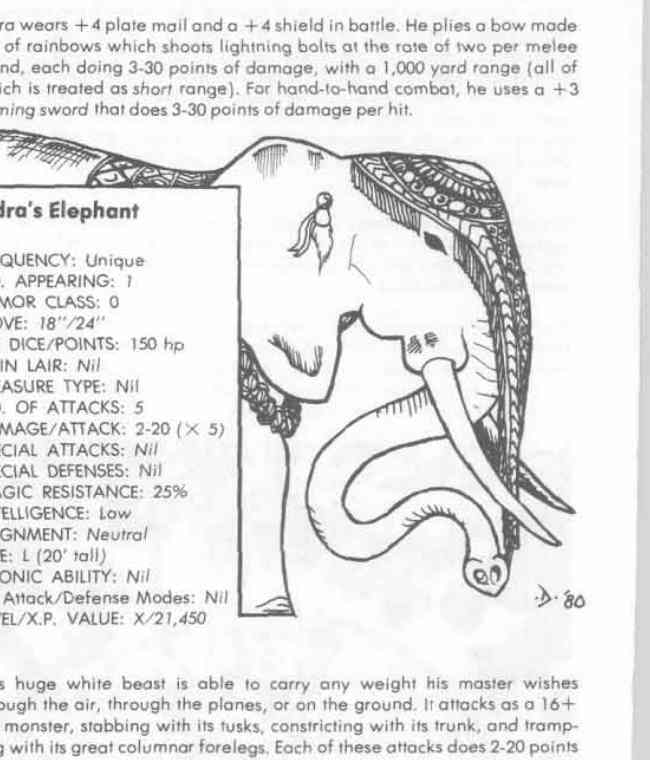

特瓦什特里、伐楼拿、毗湿奴 与 阎摩 · Tvashtri、Varuna、Vishnu 与 Yama
Tvashtri（神匠） 能设计极有用的器物与强大武器；几乎所有神祇的著名武器都出自他的设计，因此这些武器不能伤害他。他常携带能制造复杂装置的风车状工具。
Varuna（秩序与誓言守护者） 监督契约与宇宙法则，能惩罚违誓者并召来水与束缚之力。Vishnu（守护与维持之神） 拥有众多化身，每个化身负责保护某一时代或某类生命；他的海螺能在危险时把他送入以太位面，红色长袍本身也是能抵抗魔法、热、寒冷与光线的神器。
Yama（死神半神） 负责审判和收取亡魂，骑水牛并持权杖；他的牧师在死者通过审判前不得擅自复活他们。印度神祇往往要求信徒献上与自身职能相称的祭品，而错误的祭礼会带来重复任务或失去种姓特权。
